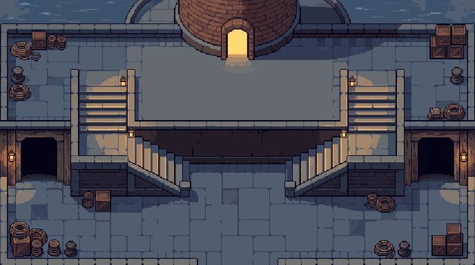
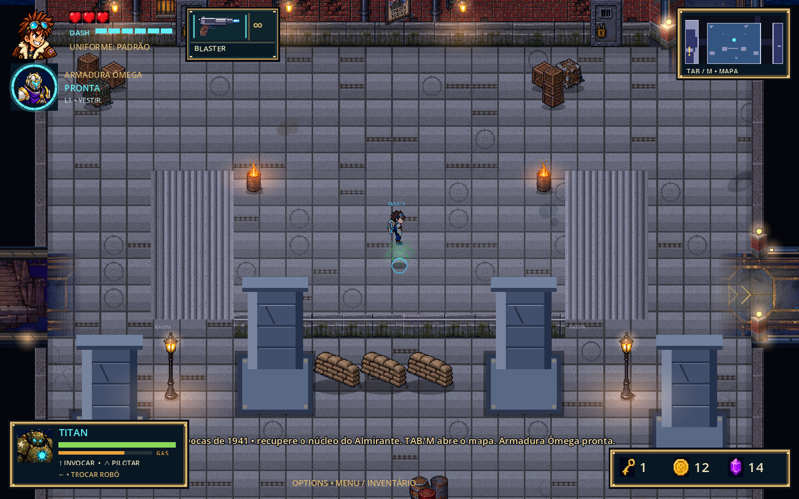

Um porto que faz sentido ao olhar e ao atravessar.
Arquitetura desenhada em conjuntos, chão tranquilo e caminhos claros. O Balcão do Farol estabelece a linguagem para reconstruir as docas.
Proposta visual · 30 setembro 2026 · Ainda não aplicada ao jogoBalcão do Farol
Pedra úmida, ferro envelhecido e luz âmbar. O relevo deve ser percebido pela forma dos degraus, pelas faces do patamar e pelas sombras de contato. O espaço central permanece livre para a ação.

O que aproveitar
Piso central tranquilo, materiais consistentes, iluminação localizada, volumes completos e decoração agrupada nas bordas. Os degraus têm faces e sombras reconhecíveis; deixam de parecer faixas de textura.
O que corrigir na produção
A geração criou escadas em dois lances e uma parede alta demais para as 44 unidades de desnível do jogo. Simplificar para dois lances laterais curtos, um de cada lado, baixar a face frontal e manter a conexão ao norte. A porta iluminada do farol é apenas uma proposta: não pode sugerir uma interação inexistente.
Boa referência de linguagem visual; ainda não corresponde à geometria jogável. O esquema abaixo define as conexões e a orientação que a arte de produção deverá seguir.
O que precisa mudar

Escada como estrutura
Substituir a faixa repetida por um conjunto com início, degraus, chegada e laterais conectadas ao patamar. Uma subida não pode parecer um tapete sobre o chão.
Menos ruído no piso
Remover desenhos de trilhos e engrenagens espalhados como textura. Concentrar juntas, marcas e pequenas peças perto da arquitetura.
Escala compartilhada
Pilares, caixas, portas e personagens precisam compartilhar proporções e densidade de pixels. Redesenhar estruturas dominantes antes de acrescentar decoração.
A arte segue o caminho real
As duas subidas existentes são laterais: a esquerda sobe para a direita e a direita sobe para a esquerda. O patamar central é baixo. A conexão ao norte, perto da lateral direita, também deve permanecer reconhecível.
A circulação não depende só de cor: bordas, orientação dos degraus e faces verticais precisam comunicar o desnível. Luzes reforçam o caminho sem criar falsas entradas.
Conjuntos maiores, em camadas
O que será composição fixa
- Escadas, laterais e patamar desenhados juntos.
- Fachadas com suas portas, soleiras e sombras.
- Bordas do cais, ancoragens e transições de material.
- Piso composto em áreas grandes, com regiões de descanso visual.
O que continua separado
- Caixas destrutíveis, barris, portões e objetos interativos.
- Paredes e estruturas que ocultam parcialmente o personagem.
- Água, fumaça, reflexos e luzes animadas.
- Pequenas peças repetíveis de ligação, com bordas compatíveis.
Ordem de montagem: fundo e água → chão e degraus → sombras de contato → estruturas e atores ordenados pela posição dos pés → detalhes de primeiro plano → efeitos. A geometria determina o que é atravessável; a imagem precisa expressar essa mesma geometria.
A meta é reduzir a repetição percebida, não eliminar todos os tiles. Uma placa pequena esticada sobre a sala inteira repetiria o problema de escala que já existe.
Cada área tem um motivo para existir
A mesma pedra, madeira, luz e ferragem reaparecem em todo o porto. A função de cada espaço muda sua composição; não exige uma linguagem visual diferente.
| Área | Âncora visual | Tratamento e conexão |
|---|---|---|
| Desembarque | Cais e chegada temporal | Reconciliar a pintura existente com a paleta e a escala novas. Madeira leva ao piso mineral do pátio. |
| Pátio dos Guindastes | Um conjunto de guindaste e carga | Trilhos contínuos e funcionais; carga agrupada nas bordas; centro de combate limpo. |
| Armazém 7 | Vigas e passagem de carga | Tábuas largas, reforços alinhados, soleiras de ferro; vãos com contorno e profundidade claros. |
| Mercado de Peixe | Bancas e drenagem | Pedra molhada, toldos periféricos e pequenos restos junto às bancas. Mesmo cais do desembarque. |
| Oficina | Bancada e manutenção do Titan | Ferramentas e luz quente perto da atividade; acesso e espaço de interação desobstruídos. |
| Último Gerador | Máquina central | Cabos e canaletas conduzem ao gerador; circulação ao redor; iluminação elétrica localizada. |
| Depósito de Munição | Baias de armazenamento | Coberturas agrupadas e explosivos legíveis; saída e parede secreta preservadas. |
| Pátio Ferroviário | Uma linha férrea que atravessa o espaço | Trilhos com continuidade, carga lateral e travessias claras; sem trilhos decorativos aleatórios. |
| Balcão do Farol | Patamar e farol | Conjunto de escadas completo; marco vertical periférico; pátio inferior aberto. |
| Capela do Culto | Altar e arquitetura reaproveitada | Pedra do porto sob símbolos do culto. Reconciliar a placa existente e seus conectores, evitando emendas de estilo. |
| Doque Seco | Estrutura de reparo naval | Laterais de pedra e ferro, andaimes periféricos, fossos com bordas contínuas e rotas de contorno. |
| Arena do Almirante | Presença monumental do chefe | Preservar espaço para ler ataques; avaliar contraste e escala da placa atual contra o novo conjunto. |
| Adega Inundada | Linha da água e passagens secas | Reutilizar os materiais em versão alagada; água rasa decorativa e queda real com leituras distintas. |
| Contrabando | Carga escondida | Versão íntima do armazém, luz localizada e acesso coerente com a parede secreta. |
Do conceito ao trecho jogável
- Fixar a referência: revisar este conceito junto de Marty e dos inimigos na escala de jogo. Definir a densidade de pixels antes de produzir o kit.
- Desenhar sobre o mapa: alinhar escadas, patamar, entradas e conexão ao norte às regiões caminháveis. Decidir quais pilares deixam de existir e ajustar suas colisões junto da arte.
- Produzir o conjunto no PixelLab: usar a referência comum em todas as gerações; criar subpeças na escala de uso, com margens de encaixe e pontos de origem definidos.
- Integrar uma área completa: Farol e os dois encontros com corredores, incluindo sobreposição, sombras e elementos interativos.
- Verificar em movimento: atravessar ambos os sentidos, subir e descer, usar dash e salto, circular com Titan e parceiro; observar câmera, oclusão, tiros e transições.
- Expandir por grupos conectados: Farol e conexões → pátios e armazém → mercado e oficina → áreas especiais. Reutilizar materiais aprovados e inspecionar cada encontro entre áreas.
Critérios de aceite do primeiro trecho
- É possível apontar entrada, subida, chegada e saída sem texto de ajuda.
- Todo bloqueio importante tem uma forma visível compatível; nenhuma escada desenhada leva a uma parede invisível.
- Marty, inimigos e projéteis continuam legíveis sobre pisos e sombras.
- Os encontros entre sala e corredor não apresentam costura, mudança de escala ou interrupção de borda.
- O centro tem espaço de combate deliberado; os objetos mantêm função e posição plausíveis.
- Sem crescimento excessivo de memória ou quedas perceptíveis de fluidez após integrar a área; medir no jogo.
Notas de produção e origem
O mapa atual do Farol ocupa 1700 × 1300 unidades. O patamar mede 800 × 360, e cada rampa 200 × 360. A simulação aplica 44 unidades de elevação. O conceito tem 688 × 384 pixels e proporção diferente: não deve ser aplicado diretamente ao retângulo do mapa.
Há três conexões a preservar: oeste para a Capela, leste para o Pátio Ferroviário e norte próximo ao canto direito. O esquema simplifica os obstáculos atuais. A arte de um farol é uma proposta de marco visual; sua posição final depende dessas conexões.
Origem: PixelLab Pro, geração 168988c6-693c-48ec-b077-4792c72f8ac6. Prompt e rastreabilidade em manifest.json. Um estudo de escadas retornou vazio; uma segunda tentativa foi descartada por colocar as escadas nas faces norte e sul e repetir o piso em grade. Esses estudos não integram a direção proposta. Registro em estudo-escadas-manifest.json. Nenhum código ou asset de runtime foi substituído nesta etapa.